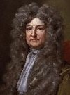

Nicolaes Corneliszoon VAN HOORN : marin néerlandais (Flessingue, v. 1632 - en mer, golfe du Mexique, juin 1683).
Il avait épousé à Flessingue, en 1671, une ressortissante française, Lucrète Le Roux, fille d'un agent de la Compagnie des Indes occidentales à Nantes. Quoique Zélandais, il semble avoir pris le parti de la France durant la guerre de Hollande, peut-être comme capitaine corsaire, sinon en qualité d'armateur. En 1681, il fut choisi pour commander une expédition visant à approvisionner en esclaves noirs la colonie française de Cayenne. Appareillant d'Angleterre sur le Saint-Nicolas à la fin de cette année-là, il commit ensuite quelques agressions à Cadix contre les Espagnols qui lui avaient refusé la permission de faire du commerce. De là, il passa en Afrique occidentale où il remplit ses cales de nègres, puis il alla à Cayenne où il écoula une partie de sa cargaison et où il acheta une plantation, qu'il laissa sous l'administration de son beau-frère Balthazar Le Roux. Il tenta la même chose à Santo Domingo, où les Espagnols lui confisquèrent (novembre 1682) toutefois la plupart des esclaves qu'il lui restait. À la suite de cet incident, il se rendit au Petit-Goâve où il prit de Pouancey, le gouverneur de la partie française de Saint-Domingue, une commission pour faire la police des mer et donner la chasse aux pirates. Cependant, ayant pris à son bord au Petit-Goâve environ 300 flibustiers dont le sieur de Grammont (qui devint son lieutenant), il rejoignit (avril 1683) aux Honduras les capitaines De Graff et Andresson, sÕemparant à leur insu de la hourque espagnole et de sa patache. Enfin, en compagnie de ces deux capitaines et d'une dizaine d'autres, il attaqua et pilla la ville de la Vera Cruz. Sur la caye du Sacrifice, juste avant le partage du butin de la Vera Cruz, il eut un différend avec De Graff à propos des esclaves et il mourut des suites dÕune blessure lors du duel qui lÕopposa à celui-ci : il fut enterré sur la caye Loggerhead. Son lieutenant Grammont hérita alors du commandement de son vaisseau Le Saint-Nicolas. Son fil Nicolas, qui l'avait accompagné en Amérique, mourut au Petit-Goâve l'année suivante.
John VAUGHAN : homme politique anglais (vers 1640 - 1713), nommé par courtoisie John, Lord VAUGHAN depuis la mort de son frère aîné en 1667, puis devenu comte de CARBERY et baron VAUGHAN of Emlyn au décès de leur père en 1686.
Fils cadet de Richard comte de Carbery, il fut fait chevalier à vingt-deux ans par le roi Charles II, puis il fut pendant neuf ans membre du Parlement pour le bourg de Carmathan. En novembre 1674, lord Vaughan fut nommé gouverneur général de la Jamaïque à la place du comte de Carlisle qui avait décliné l'emploi. Dès son départ pour les Antilles, au début de l'année suivante, il entra en conflit avec l'ancien flibustier Henry Morgan, que le roi lui avait donné comme lieutenant. Une fois à la Jamaïque, ce conflit s'envenima parce Morgan utilisa le nom de Vaughan, sans l'accord de celui-ci, pour attirer dans la colonie les flibustiers anglais qui servaient alors les Français de Saint-Domingue. Vaughan se montra ainsi dur avec ces flibustiers et tenta de discréditer Morgan et ses partisans aux yeux du roi et de ses ministres. Mais, en 1678, ayant été rappelé en Angleterre, il quitta la Jamaïque pour ne plus y revenir. Plus tard, Il exerça un mandat comme président de la Royal Society (1686-1689). À la fin de sa vie, il fut accusé d'avoir fait déporter à la Jamaïque plusieurs Gallois.
Moïse VAUQUELIN : flibustier français.
En 1666, il commanda un brigantin dans la flotte de l'Olonnais au sein de laquelle il participa au pillage des établissements espagnols du lac de Maracaïbo. En mai 1667, il suivit une nouvelle fois ce dernier, mais l'abandonna après la prise de la hourque des Honduras, s'embarquant sur une prise faite à Puerto Caballo. Il participa ensuite avec le Picard à la descente sur Veragua (1668). Auparavant ou après cet incident, il échoua son bâtiment sur un récif puis s'embarqua avec ses gens sur une frégate française de trente canons commandée par le chevalier du Plessis. Après la mort de celui-ci lors d'un combat contre des Espagnols aux côtes de Cuba, il lui succéda comme capitaine et captura, près de Cuba, une flûte de 400 à 500 tonneaux chargée de cacao. En menant cette prise à l'île de la Tortue où il portait aussi le corps de Du Plessis, il rencontra le 25 novembre 1668 un corsaire commandée par François Beaulieu. En 1670, il rédigea, conjointement avec le capitaine Bequel, un mémoire décrivant le Yucatán et les Honduras à la demande du comte d'Estrées.
Robert VENABLES : officier anglais (vers 1613 - 1687).
De 1642 à 1648, il servit dans l'armée anglaise dans le Lancashire et le Cheshire. En 1649, en qualité de colonel, il commandait un régiment d'infanterie dans l'armée levée pour l'expédition en Irlande. Après la reconquête de celle-ci, il demeura en poste en Ulster (automne 1649 au printemps 1654), où il commandait les troupes d'occupation anglaise. En mai 1654, il revint en Angleterre pour défendre le point de vue des officiers irlandais de l'armée. À cette occasion, le protecteur Cromwell lui offrit le commandement des troupes en prévision du Western Design, entreprise visant à gagner quelque intérêt en Amérique sur les Espagnols. En décembre, il recevait sa commission de général et commandant en chef pour cette expédition, mais il dut partager ses pouvoirs avec l'amiral Penn ainsi que trois commissaires civils, nommés eux aussi par le Conseil d'État. Dès le départ, il entretint de très mauvaises relations avec Penn. Et, après un passage à la Barbade, l'expédition échoua devant Santo Domingo et se rabattit sur la Jamaïque, dont le port principal fut facilement pris. Laissant le commandement de la Jamaïque à son subordonné Fortescue, Venables appareilla de la Jamaïque dès juillet 1655 sur le SS Marston Moor. À son retour en Angleterre, il fut emprisonné à la Tour de Londres. Bientôt relâché, il se retira de la vie publique.
Vent-en-panne : flibustier français (mort vers 1672).
Exquemelin le décrit comme un joueur invétéré, qui fut tué lorsque le navire sur lequel il repassait en France fut attaqué par une frégate flamande armé à Ostende.
VERTPRÉ : flibustier français.
En 1684, il commandait un petit bâtiment corsaire dépendant de la colonie de Saint-Domingue. Il était probablement apparenté à Jean Jaham sieur de Vertpré (1610-1685), habitant de la Martinique, qui se maria deux fois et eut huit enfants.
VIGNERON : flibustier français.
En mars 1684, commandant la barque La Louise, il appareilla de la côte de Saint-Domingue au sein de la petite flotte du sieur Bernanos qui se rendit à l'île de Sainte-Croix puis au golfe de Paria. Il participa alors à la prise de Santo Tomé de La Guayana, sur l'Orénoque. Au retour de cette expédition après avoir croisé plusieurs semaines vers les îles Trinidad et Margarita, il relâcha à l'île Tortuga, à la côte de Caracas, avec trois de ses associés, dont le capitaine Cachemarée. Quittant cette île au début de janvier 1685, il guetta en vint la patache de l'île Margarita avec les capitaines Andresson, De Graff, Lagarde et Rose. Mais, après une escale à Curaçao, il se sépara de ses associés pour retourner à Saint-Domingue, n'ayant alors pas assez de monde à son bord pour faire la guerre. Il reprit apparemment du service comme flibustier durant la guerre de la ligue d'Augsbourg, au moins jusqu'en 1694.
François GOUALIER, sieur de VILLENEUVE : aventurier français.
Lieutenant de milice à Léogane, il fut retenu prisonnier avec le major Renou à bord du navire du contrebandier flessinguais Constant lors de la révolte des habitants de Saint-Domingue en mai 1670.
René de GOUSABATS, sieur de VILLEPARS : marin français (mort aux Antilles, 1672).
Capitaine de vaisseau dans la marine royale, il commanda le Tigre au sein de l'escadre du compte d'Estrées qui patrouilla aux Antilles en 1669-1670. En 1671, il reçut lui-même le commandement d'une escadre royale qui se rendit aux Antilles, montant lui-même le vaisseau du roi Le Mazarin (rebaptisé Le Bon). En juillet de cette année-là, il se trouvait à la côte de Saint-Domingue où les habitants se tenaient tranquilles, un an après la révolte. Durant sa croisière, il captura le flibustier Trébutor qu'il avait reçu l'ordre d'arrêter pour piraterie. En septembre, Villepars échoua le Mazarin à l'île de la Tortue et ne put le remettre à flot, son prisonnier profitant de cet accident pour s'enfuir. Il mourut en poste. M. de Montortié lui succéda comme commandant de l'escadre des Isles d'Amérique.
VIVIEN : marin français originaire de Saint-Malo.
Commandant le Cerf-Volant monté par 45 hommes et portant commission du duc de Beaufort, il arriva aux Antilles en 1668. À la fin de cette année-là, il fut l'un des deux capitaines français qui se trouvaient à l'île à Vache où mouillaient également Henry Morgan et sa flotte. À l'arrivée du HMS Oxford, Morgan, sous prétexte que la commission du Malouin n'était valable qu'en Méditerranée et qu'il avait pillé un marchand virginien, s'empara de son navire. Après l'explosion de l'Oxford, il fut conduit prisonnier à la Jamaïque, sur son propre navire que les Anglais conservèrent et rebaptisèrent The Satisfaction, avec Edward Collier comme commandant. La Vivon obtint par la suite sa liberté du gouverneur Modyford.
WADE : flibustier anglais.
Le 14 avril 1660, ce capitaine, commandant un bâtiment nommé The Sea Horse, obtenait un congé du colonel D'Oyley, le gouverneur militaire de la Jamaïque, pour sortir du port Cagway (future Port Royal), avec commission du même officier pour prendre sur les Espagnols.
John WAITLING : flibustier anglais (mort à Arica, 9 février 1681).
Vétéran de la flibuste, il passa à la mer du Sud en 1680 avec les capitaines Harris, Coxon, Sawkins, Sharpe et Cooke. En janvier 1681, à l'île Juan-Fernández, à l'instigation de John Cox, il fut élu commandant de la Santísima Trinidad et capitaine général des flibustiers en mer du Sud après la déposition de Sharpe. Au début du mois suivant, il commanda la descente sur Arica au cours de laquelle il fut tué et ses hommes repoussés. Les Espagnols lui tranchèrent la tête et la plantèrent au bout d'une pique pour intimider les flibustiers.
Sir Francis WATSON : homme politique anglais.
Il arriva à la Jamaïque en 1679 comme major-général puis il siégea sur le Conseil de la colonie. Allié à Henry Morgan, il fut élu président du Conseil et, à ce titre, assura l'intérim du gouvernement à la mort du duc d'Albemarle (1687), dont il ne put cependant poursuivre la politique anti-espagnole.
Elias WATTS : aventurier anglais.
Au début de 1657, il sortit de la Jamaïque, avec sa famille et une douzaine d'autres colons, et alla s'établir à l'île de la Tortue, dont il obtint du général Brayne une commission de gouverneur. Il attira dans l'île moins de deux cents Français et Anglais. Sous son administration, en 1660, les flibustiers de la Tortue pillèrent Santiago de los Caballeros avec sa commission. L'année suivante, peu de temps après l'arrivée de Deschamps du Rausset, il quitta précipitamment la Tortue et alla s'établir en Nouvelle-Angleterre. Par la suite, son gendre Arundell, tenta en vain de reprendre l'île sur les Français.
Henry WELLS : marin anglais né vers 1636.
En 1670, il commandait le Prosperous, un brigantin de 16 tonneaux, armé de quatre canons, avec un équipage de 35 hommes, avec lequel il participa à l'expédition de Panama au sein de la flotte de l'amiral jamaïquain Henry Morgan. Après cette expédition, il se retira à la Jamaïque (après avril 1671). Il mouilla d'abord à Withy Wood, où il rencontra le capitaine Erasmus (un autre participant de la prise de Panama), lequel avait un ordre du gouverneur Modyford pour ramener dans la colonie le capitaine Yhallahs qui se trouvant alors aux îles Caïman, et qui réquisitionna le Prosperous à cette fin. Concernant cette affaire, Wells fit une déposition à la fin décembre 1671 à St. Jago de la Vega devant le nouveau gouverneur Lynch et les membres du conseil de la Jamaïque. En 1679, Wells vivait toujours à Port Royal et y exerçait le métier de tenancier.
John WENTWORTH : marin anglais.
En avril 1657, commandant la frégate Martin Galley, il fit escale aux Bermudes d'où il repartait en juillet suivant. En provenance de la Jamaïque, étant cette fois capitaine du Paul, il revint en novembre aux Bermudes pour y chercher des colons. De conserve avec le Golden Falcon, il en appareilla avec près d'une centaine d'hommes, de femmes et d'enfants en janvier 1658 à destination de la Jamaïque. Il y était de retour en avril, mais il en repartait quelques semaines plus tard pour l'Angleterre. En 1663, commandant le Campechana, il obtint, à la Jamaïque, du gouverneur adjoint Lyttleton une commission pour prendre sur les Espagnols. Au début de 1665, il pilla un navire français à la Guadeloupe, puis la même année, au début de la guerre avec les Néerlandais, l'île Tortola. En 1671, il devint gouverneur de îles New Providence et Eleuthera dans les Bahamas.
Thomas WHETSTONE : aventurier anglais (probablement aux Pays-Bas, v. 1631 - probablement aux Antilles, v. 1668), fait chevalier par le roi Charles II vers 1660 : Sir Thomas Whetstone.
Fils de Roger Whetstone, il était par sa mère, Catherine Cromwell, le neveu du protecteur Oliver Cromwell à l'instigation duquel il entra comme officier dans la marine du Commonwealth. Sa première affectation fut en qualité de lieutenant à bord du S.S. Swiftsure contre le souhait de l'amiral William Penn, dont c'était le vaisseau amiral. De décembre 1654 à septembre 1655, à bord du Swiftsure, Whetstone participa au Western Design, qui se termina par la conquête de la Jamaïque. Début 1656, moins de six mois après son retour en Angleterre, il obtenait son premier commandement sur le S.S. Phoenix, avec lequel il fit deux voyages au Portugal au sein de la flotte de Robert Blake. En 1657, il était promu au commandement du S.S. Fairfax, un vaisseau du 3e rang, et il fut placé, cette fois, sous les ordres du capitaine John Stoakes, chef de l'escadre anglaise alors stationnée à Lisbonne. Début 1658, il fut assigné à croiser entre Malte et la Crête avec quatre vaisseaux. Là, il captura un navire néerlandais qu'il alla vendre à Zante pour le tiers de sa valeur. Fin mai, il gagna Tetouan où il trouva un ordre d'aller se mettre à la disposition du chevalier Paul, chef de l'escadre française en Méditerranée. À Toulon, pour éviter de se conformer à cet ordre et contre l'avis de Paul, il fit caréner le Fairfax. Puis il reprit la mer pour une brève croisière et mena à Marseilles une prise faite par l'un de ses capitaines. Croisant ensuite le long de la Riviera, il entra en septembre à Livourne, où il tenta de s'emparer d'un riche navire marchand, qu'il dut abandonner à un navire de guerre néerlandais pourtant moins fort que le Fairfax. De retour à Toulon en octobre, pour cette erreur et d'autres insubordinations, il fut mis sous arrêt par son chef Stoakes et renvoyé en Angleterre pour conduite indigne. Son oncle Cromwell étant décédé entre-temps, il ne put recouvrer un commandement dans la marine. Mais, dès 1659, il fut gagné à la cause royaliste et alla même à Bruxelles rendre hommage au futur Charles II. Il se rendit ensuite à Copenhague pour tenter de convaincre l'amiral Edward Montagu, qui y servait de médiateur entre le Danemark et la Suède, de se joindre au camp royaliste. Mal menée, cette mission se révéla un échec, ce qui n'empêcha pas le roi Charles de faire Whetstone chevalier à la Restoration. En 1661, Sir Thomas fut toutefois emprisonné pour dette à Marshalsea, d'où il sortit avant la fin de l'année sur le paiement par le roi d'une somme de 100£. Cette libération était aussi conditionnelle à un exil à la Jamaïque. Sir Thomas s'y rendit en 1662 et y devint capitaine flibustier. En septembre 1662, croisant entre la Jamaïque et Cuba, en compagnie de sept autres capitaines, il rencontra une petite flotte corsaire, qui venait de quitter Port Royal, sous le commandement du capitaine Christopher Myngs, de la Royal Navy. Sous les ordres de ce dernier, il participa quelques jours plus tard à la prise de Santiago de Cuba, et probablement aussi à celle de San Francisco de Campeche en avril suivant. En effet, à la fin de 1663, Sir Thomas commandait toujours un corsaire à la Jamaïque, une prise espagnole de six canons. Entre-temps, il acquit des terres dans l'île, car, en octobre 1664, il fut élu membre de l'Assemblée de la Jamaïque pour la paroisse de Saint Catherine. Il fut aussi choisi orateur de l'Assemblée et en présida les travaux de manière à discréditer tant la précédente assemblée que l'ancienne administration coloniale. Décrit par l'un de ses adversaires politiques comme étant un homme malicieux, misérable et débauché, il bénéficia probablement de l'appui du nouveau gouverneur Modyford. Il fut aussi appelé à occuper des fonctions judiciaires, comme en mars 1665 lorsqu'il fut membre de la cour martiale qui condamna comme pirates les hommes du défunt flibustier Moreau. En juin 1666, à la demande de Modyford, il accompagna le major Samuel Smith et une trentaine d'hommes à l'île Providence, reconquise quelques semaines plus tôt par le flibustier Mansfield. Cependant, dès le mois d'août, les Espagnols de Puerto Belo en reprirent possession, et Whetstone, Smith et un autre capitaine furent séparés de leurs hommes et envoyés prisonniers à Panama où ils furent enfermés dans un donjon et mis aux fers pendant 17 mois. Vers la fin de 1667, Whetstone fut relâché en même temps que ses deux compagnons d'infortune.
John WHITE : juriste, marchand et planteur anglais (mort à la Jamaïque, août 1692).
En 1671, il était juge en chef de la Jamaïque, fonction qu'il conserva jusqu'à l'arrivée du gouverneur Vaughan en mars 1675. Cependant, il demeura membre du conseil de la colonie. À la mort du comte d'Inchiquin (1691), il assura l'intérim du gouvernement de la Jamaïque en qualité de président du conseil, et il mourut en fonction.
Francis WITHERBORN : flibustier anglais.
En 1671, dans la baie de Campêche, il prit le commandement de la barque Charity, l'ancien bâtiment du flibustier néerlandais David Martin. À la fin de la même année, avec environ 25 hommes, il participa à la prise et au pillage de deux bourgs espagnols à la côte nord de Cuba, en association du capitaine français Dumangle. Tous deux furent ensuite capturés par le colonel Beeston, commandant le HMS Assistance, conduits à Port Royal puis condamnés à être exécutés pour leurs pirateries (mars 1672). Mais la sentence fut suspendue, et Weatherborn fut embarqué prisonnier sur le HMS Welcome, en compagnie de Henry Morgan et envoyé en Angleterre. Emprisonné à la Tour de Londres, il en fut relâché par un ordre du roi Charles II au début de juin 1673.
William WITHING : marin anglais (mort à île à Vache, 12 janvier 1669).
Depuis au moins septembre 1663, il commandait le Recovery, en course et en traite dans la mer des Antilles. En septembre 1664, il fit escale à la Barbade. Vers janvier 1665, il arriva à la Jamaïque et s'y trouvait encore en mai suivant, au moment où il en appareilla à destination de la Virginie où son équipage voulait vendre les marchandises prises sur des navires espagnols ainsi que quelques Indiens qu'ils avaient réduits en esclavage. Whiting y arriva en décembre 1665 où ses hommes et lui furent placé sous arrêt pour piraterie par ordre du gouverneur Sir William Bartlett. Depuis la Virginie, il fut plus tard envoyé en Angleterre, où, le 22 novembre 1667, il fut interrogé concernant cette affaire. Il semble avoir été innocenté puisque dès l'année suivante il était de retour à la Jamaïque, où il est recensé parmi les marins vivant à Port Royal. Ainsi, en septembre 1668, il achetait, en association avec Arthur Burnham et Andrew Shepherd, le Blessing. Comme capitaine ou maître de ce petit bâtiment ou officier sur un autre, il joignit la flotte de Henry Morgan à l'île à Vache, où il périt lors de l'explosion de la frégate Oxford.
John WILLIAMS : flibustier anglais.
Commandant une petite barque longue et croisant sous commission française, John Williams rencontra, au début de 1681, au large des côtes de l'île Hispaniola, le flibustier néerlandais Yankey avec lequel il se rendit à l'archipel de San Blas. Là, à Springer's Key, vers avril de la même année, se réunirent, outre Williams et Yankey, les capitaines Coxon, Wright, Paine, Archambaud, Tristan, Rose et Tocard. Leur flotte avait pour dessein de faire descente au Costa Rica, mais elle fut dispersée au début de juin par le mauvais temps. Le capitaine Williams fut de ceux qui gagnèrent quand même le Costa Rica. Vers le mois d'août, se trouvant alors en compagnie du capitaine Paine, il fut chassé par des gardes-côtes espagnols. Par la suite, il gagna le golfe des Honduras. Au cap Catoche, vers le 4 janvier 1682, il se rendit maître d'un ketch que des Espagnols avaient pris sur des Anglais. De là, sur sa nouvelle prise, il alla à l'île Cayman, puis il croisa aux côtes de Cuba avant de se rendre en Virginie. De cette colonie anglaise, où il fit escale, Williams appareilla pour la Nouvelle-Angleterre. Il semble alors, ou même avant, que ses hommes le dépouillèrent de son commandement, au profit d'un certain Daniel qu'ils firent capitaine. Leur compagnie, au nombre de 30 ou 40 hommes, visita ainsi le Rhode Island, New York et le Connecticut, vendant un peu de leur pillage tout en pillant aussi certains petits bâtiments de la Nouvelle-Angleterre. Mais en juillet 1682, Williams et trois de ses hommes furent capturés au Connecticut et, le mois suivant, interrogé à propos de leurs pirateries par le gouverneur William Leete, à Hartford.
Maurice WILLIAMS : flibustier anglais.
En mai 1659, il acheta à la Jamaïque une frégate espagnole prise par les vaisseaux du Commonwealth, qu'il rebaptisa The Jamaica. Et le même mois, il obtenait un congé du colonel D'Oyley, le gouverneur militaire de l'île, pour sortir du port Cagway (future Port Royal), avec commission du même officier pour prendre sur les Espagnols. Pendant cinq ans, il attaqua les vaisseaux espagnols à partir de Port Royal de la Jamaïque. À la fin de 1664, il y mena le Santo Christo de Burgos, patache de la flotte de Terre ferme, chargé de bois de campêche, d'indigo et d'argent. Il fut alors jugé pour piraterie et condamné à être pendu pour cette prise. Mais le nouveau gouverneur Thomas Modyford, ayant reçu de nouvelles instructions de Londres, lesquelles lui demandaient de se montrer moins dur avec les flibustiers, le gracia. Ainsi, en avril 1665, sur sa prise rebaptisée The Speaker, Williams fit parti de la flotte qui appareilla de la Jamaïque sous les ordres du gouverneur adjoint Edward Morgan, qui s'empara de Saint-Eustache et Saba sur les Néerlandais. L'année suivante, demeuré aux Petites Antilles, il participa aux combats opposant Anglais et Français à l'île Saint-Christophe. Après la défaite anglaise, il fut prisonnier des Français mais retrouva sa liberté en 1667. Il joignit alors l'expédition qui partit de l'île Nevis sous les ordres du général Henry Willoughby et du commodore John Harman pour aller attaquer Cayenne, lors de la prise de laquelle il se distingua en commandant en second l'avant-garde britannique. En 1669, il fut capturé aux Petites Antilles, pour des pirateries commises avant et après la guerre, par les Français qui refusèrent de lui rendre sa liberté.
Thomas WINDSOR-HICKMAN, baron WINDSOR of Stanwell : homme politique anglais (vers 1627 - 13 novembre, 1687), créé comte de PLYMOUTH par Charles II en décembre 1682.
Fils de Dixie Hickman et d'Elizabeth Windsor, il hérita de son oncle maternel le nom et la baronnie de Windsor (après 1641). À la bataille de Naseby, il combattit pour le roi Charles I. À la Restoration, il fut nommé gouverneur général de la Jamaïque, avec des instructions visant à encourager la guerre de course contre les Espagnols si aucun commerce pacifique n'était possible avec eux. Dès son arrivée en 1662, il attira ainsi à Port Royal de nombreux flibustiers, dont un certain nombre participèrent ensuite aux entreprises du capitaine Myngs. Après moins de six mois en poste, ayant sollicité son congé, lord Windsor rentra en Angleterre sous prétexte de maladie, ce qui fit dire au secrétaire de la Marine, Samuel Pepys, que ces jeunes lords n'étaient pas faits pour le service outre-mer. Dans les années 1680, Windsor, devenu comte de Plymouth, siégea sur le Comité pour le Commerce et les Plantations.
Edward WINDSLOW : homme politique anglais (Droitwich, 1595 - mer des Antilles, 17 mai 1655).
Dans sa jeunesse, il vécut quelque temps au Pays-Bas où il se lia avec des puritains en exil. En 1620, il fut l'un des passagers du Mayflower qui allèrent fonder une colonie en Nouvelle-Angleterre. Il fut gouverneur de cette colonie, baptisée New Plymouth, de 1633 à 1644. Par la suite (1646), il repassa en Angleterre où il alla défendre les intérêts des colons du Massachusetts. En décembre 1654, il fut nommé l'un des trois commissaires civils qui devaient partager la direction du Western Design avec le général Venables et l'amiral Penn. Après l'échec de l'expédition contre Santo Domingo, étant déjà malade, il mourut en mer alors que la flotte anglaise gagnait la Jamaïque.
Thomas WOODRIFFE : marin anglais.
En 1670, il commandait un sloop dans la flotte de Morgan sous les ordres duquel il participa à l'expédition de Panama. En février 1689, un homme nommé Thomas Woodriffe déclara, à la Jamaïque, que son sloop, en même temps que ceux de Daniel Cornelius et de Thomas Carnaby, avait été pillé aux cayes du sud de Cuba par le pirate espagnol Juan Nicolas; il pourrait s'agir du même homme ou d'un parent.
Thomas WOOLLERLY : flibustier anglais.
À la fin mai 1687, montant un gros navire, il arriva à l'île New Providence (Bahamas) disant avoir commission de l'ancien gouverneur Lilburne et revenant probablement de la mer du Sud. Le nouveau gouverneur Bridge lui ayant refusé la permission de rester dans le port, il alla à l'île Andros où il brûla son navire. La présence de Christopher Goffe à son bord pourrait permettre de l'identifier au capitaine Handley.
WOOLLEY : marin anglais.
En mars 1683, ce capitaine se trouvait sur l'épave de la Maravillas, dans le canal des Bahamas en compagnie des flibustiers Bréha, Paine et Markham avec lesquels il alla faire descente aux environs de San Agustín, en Floride. Il est pratiquement certain qu'il s'agit du capitaine Woolerly, auquel aura été associé par erreur le nom d'un autre flibustier anglais (Conway) dans la correspondance du gouverneur Lilburne.
William WRIGHT : flibustier anglais.
Au début des années 1670, ce capitaine jamaïquain se joignit aux Français de la côte de Saint-Domingue où d'ailleurs il s'établit, pour prendre sur les Néerlandais et les Espagnols sous commission des gouverneurs de cette colonie. En 1675, à la tête de 150 flibustiers, il aurait ainsi pillé la ville de Segovia (Nicaragua). Il avait coutume de croiser aux côtes de Carthagène, Santa Marta, Caracas et Cumana. En 1679, en fréquentant l'archipel de San Blas, il conclut une alliance avec les Kunas, les Indiens du Darien, laquelle allait ouvrir la voie aux expéditions en mer du Sud. Avec la fin de la guerre avec les Néerlandais, il alla souvent liquider ses prises à l'île Curaçao. En 1680, il participa à la prise de La Guayra sous les ordres du sieur de Grammont. Au printemps de l'année suivante, il joignit, à la côte de Panama, une flotte de flibustiers ayant quelque dessein contre une ville du Costa Rica. Cette flotte s'étant dispersée, il s'associa avec le capitaine Yankey, en compagnie duquel il fit une croisière de plusieurs mois aux côtes de Carthagène et de Caracas. Au début de 1682, Wright rompit son association avec Yankey. Par la suite, le tiers de son équipage qui comptait 60 hommes se sépara d'avec lui pour se retirer en Virginie.